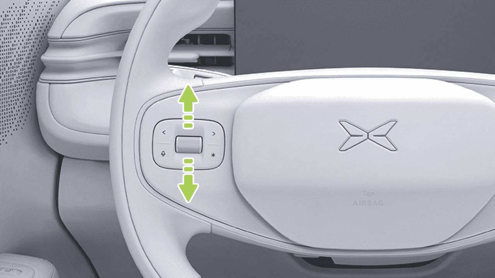
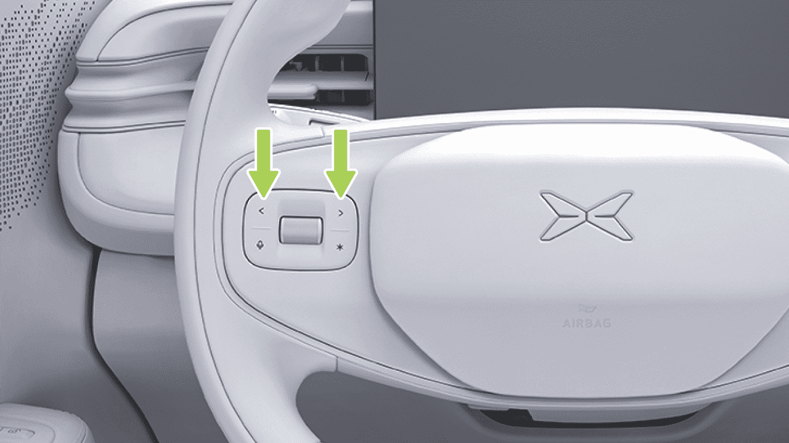
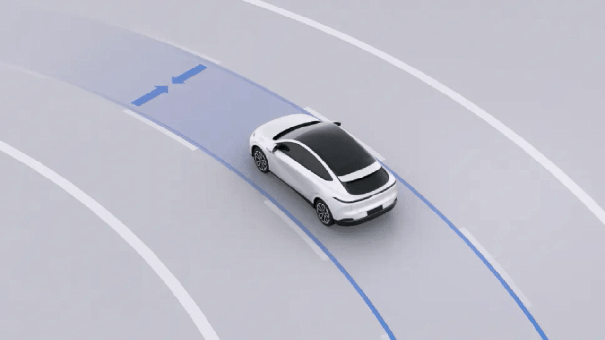
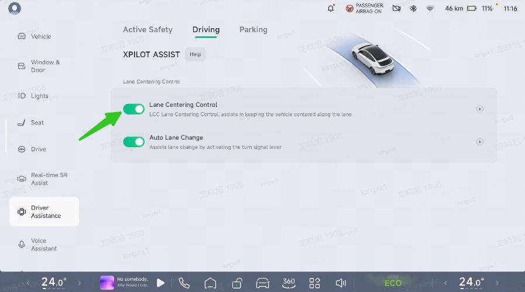
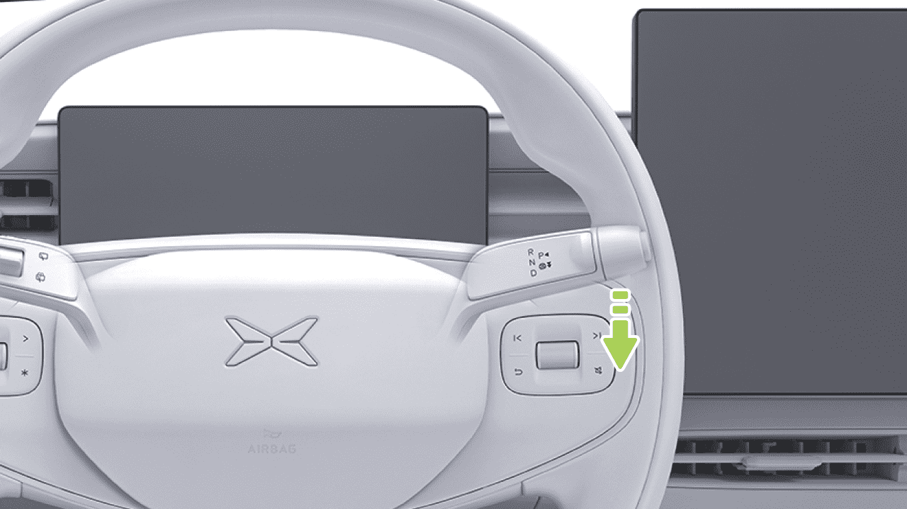
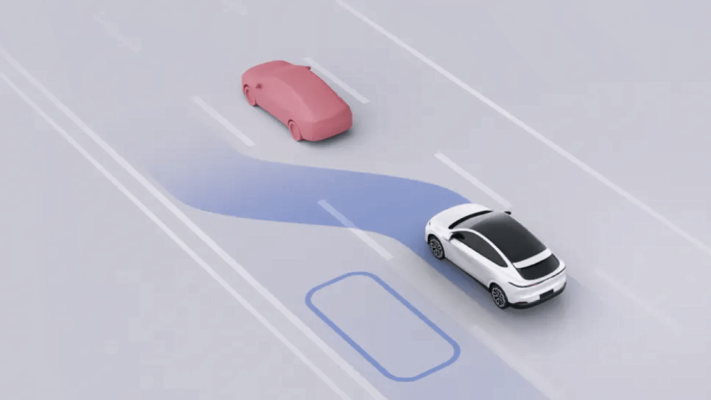
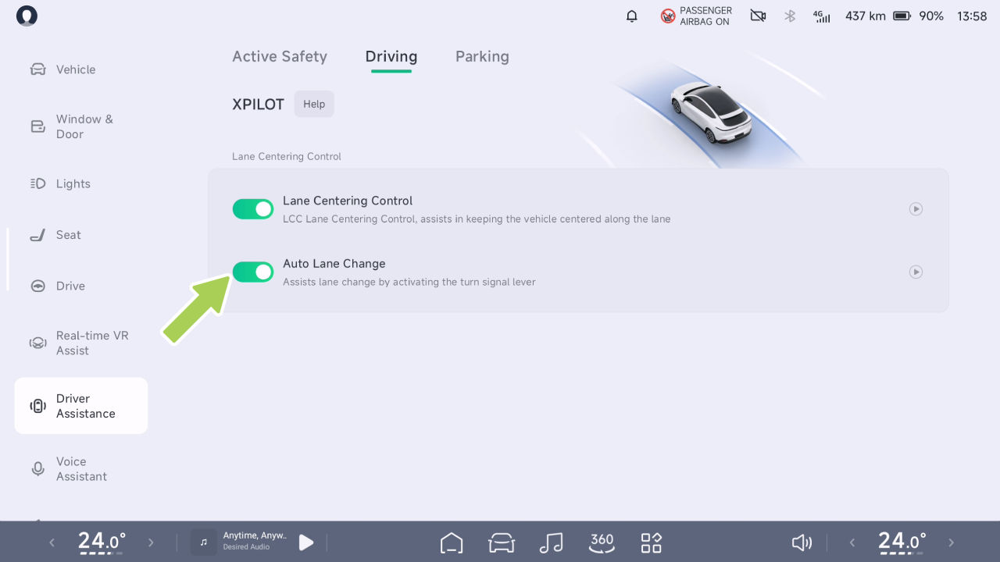
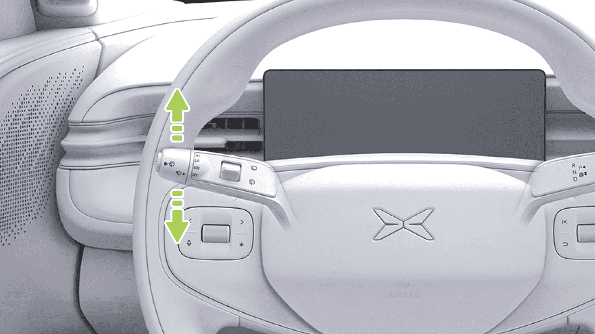

Asistencia a la conducción
Asistencia a la Conducción
Control de Crucero Adaptativo (ACC)
advertencia
Introducción
El ACC es solo una ayuda a la conducción y no puede gestionar todas las condiciones de tráfico, clima y entorno, y usted, como conductor de su vehículo, es responsable de conducir de forma segura. Sujete el volante por completo, observe la vía y tome el control en caso de peligro. No confíe en esta función para controlar el vehículo, ya que podría provocar lesiones o la muerte.
El ACC puede controlar el vehículo para seguir a otros vehículos según la distancia establecida. Si el vehículo precedente se detiene, el vehículo actual puede dejar de seguirlo. Si el vehículo precedente arranca, el vehículo actual puede empezar a seguirlo. Si no hay ningún objetivo a seguir por delante, el vehículo arrancará y circulará a la velocidad de crucero máxima establecida.
El ACC también dispone de la función de crucero adaptativo en curvas (ATC). El ATC obtiene la curvatura de la vía que tiene por delante a través de la cámara. Cuando el ACC está activado y el vehículo sigue la línea del carril o el vehículo precedente toma una curva, el ATC mejora el confort y la estabilidad en las curvas ajustando la velocidad.
Indicadores en el Tablero
El ACC no está disponible.
El ACC puede activarse cuando se cumplen las condiciones de activación del ACC.
• La luz de freno se ilumina cuando el ACC desacelera activamente para alejarse del vehículo de delante, y el pedal del acelerador no se mueve cuando el ACC acelera activamente.
Consejos
Límite de velocidad máxima del ACC/LCC, y cualquier función activada.
Límite de velocidad máxima del ACC/LCC no activado.

Asistencia a la Conducción
indicator_xpilot_fault
Consejos
El ACC se activa si se cumplen las siguientes condiciones:
Funcionamiento
• Los componentes relacionados con el ACC están operativos y tienen una visión despejada.
Activar el ACC
Cuando el ACC pueda activarse, el indicador del tablero se iluminará.
• Los limpiaparabrisas no están en HI.
• El pedal de freno no está pisado.
• No hay riesgos de seguridad, incluidos, entre otros:
– Abrocharse el cinturón de seguridad correctamente.
– Sujetar el volante con firmeza con ambas manos.
– Todas las puertas están cerradas.
– Las presiones de los neumáticos son normales.
– El ABS, AEB, etc. no están activos.
Si no se cumple alguna de las condiciones anteriores, el ACC no puede activarse.
– Conducir sin fatiga.
Tire de la palanca de cambios hacia abajo hasta el final una vez para activar el ACC, y el icono de la interfaz SR se iluminará.


Asistencia a la Conducción
Establecer la Velocidad de Crucero Máxima
la palanca de cambios para establecer la velocidad actual del vehículo como nueva velocidad de crucero. Si no tira de la palanca de cambios hacia arriba y la mantiene, sino que suelta el pedal del acelerador, el vehículo desacelerará hasta la velocidad previamente establecida y continuará en crucero.
Cuando el ACC está activado, la velocidad de crucero máxima puede establecerse mediante el botón de desplazamiento izquierdo del volante o el Sistema de Asistencia de Velocidad (SAS).
Establecer la Distancia de Seguimiento
Si gira el botón de desplazamiento lentamente, la tasa máxima de cambio de la velocidad de crucero es de 1 km/h o 1 milla/h. Si lo gira rápido, la tasa máxima de cambio es de 5 km/h o 5 millas/h.
Cuando el ACC está activado, puede ajustar la distancia de seguimiento presionando el botón izquierdo o derecho del lado izquierdo del volante. Hay 5 niveles para seleccionar.
Como alternativa, pise el pedal del acelerador. Después de que la velocidad del vehículo aumente, tire hacia abajo y mantenga


Asistencia a la Conducción
Consejos
el pedal y el vehículo desacelerará hasta la velocidad previamente ajustada y continuará en crucero.
Cuando se ajusta la distancia de seguimiento, el cuadro de instrumentos muestra la posición del nivel del intervalo.
• Presione el pedal de freno: el ACC se desactiva y el vehículo desacelera.
Alarma y toma de control
• Tire hacia arriba de la palanca de cambios: el ACC se desactiva y la regeneración reducirá la velocidad del vehículo.
• Si el vehículo emite una solicitud de toma de control mediante la interfaz SR, anuncio por voz, etc., tome el control de inmediato.
advertencia
Además, cuando el ACC está activado, si las condiciones de activación del ACC cambian de cumplidas a no cumplidas, el ACC se desactivará. Tome el control.
• En caso de peligro, o en caso de una situación que requiera la toma de control, tome el control de inmediato y no espere a que el vehículo emita una solicitud de toma de control.
Advertencias, Precauciones y Limitaciones
Lea todos los capítulos sobre el ACC en este manual, y debe comprender estas restricciones antes de utilizar la función.
Cuando el ACC está activado, puede tomar el control mediante los siguientes métodos:
El ACC está diseñado para la comodidad y conveniencia de la conducción, no como un sistema de advertencia o de prevención de colisiones. El conductor tiene la responsabilidad de mantenerse alerta en todo momento, garantizar la seguridad de la conducción y controlar el vehículo. No confíe en el sistema para reducir la velocidad del vehículo lo suficiente como para evitar colisiones. Asegúrese de observar las condiciones de la carretera por delante y esté listo para
• Pise el pedal del acelerador: la velocidad del vehículo se controla temporalmente. Después de que la velocidad del vehículo aumente, tire hacia abajo de la palanca de cambios para fijar la velocidad actual como una nueva velocidad de crucero; o suelte el acelerador
Asistencia a la Conducción
tomar medidas correctivas en cualquier momento; de lo contrario, pueden producirse lesiones graves o incluso la muerte.
advertencia
Es su responsabilidad determinar y mantener siempre una distancia de seguimiento segura. No confíe únicamente en el ACC para mantener una distancia de seguimiento precisa o adecuada.
El ACC no responde completamente en las siguientes condiciones especiales, condiciones difíciles de la carretera, mal tiempo o condiciones de luz deficientes, asegúrese de prestar atención al entorno y las condiciones. Manténgase alerta, coloque siempre la mano en el volante y tome el control del vehículo en cualquier momento, incluyendo, entre otros:
advertencia
El ACC es una ayuda a la conducción y no puede manejar todas las condiciones de tráfico, clima y carretera, no use ni active el ACC en los siguientes escenarios:
• De repente, otro vehículo se mueve rápidamente o a corta distancia hacia el frente del vehículo.
• Cuando los vehículos del carril contiguo solo tienen parte de la carrocería invadiendo el frente del vehículo (especialmente vehículos grandes como autobuses, camiones, etc.).
• Carreteras con condiciones variables, como curvas y giros (curvas en S, curvas en U continuas, etc.).
• Carreteras en mal estado, como carreteras con hielo o resbaladizas.
• El vehículo de adelante frena bruscamente.
• En condiciones meteorológicas adversas, como lluvia intensa, nieve intensa, niebla densa, etc.
• Hacer un giro en U o atravesar conduciendo entre el vehículo.
• Carreteras urbanas.
• Al conducir por túneles o de noche, cuando hay camiones, autobuses o vehículos con cargas sobredimensionadas en el carril lateral.
• Al aproximarse o tomar una curva en una carretera, cuando hay varios vehículos en paralelo.
Asistencia a la Conducción
• Para vehículos u objetos estacionarios, como obstáculos en la superficie de la carretera, especialmente si el vehículo de adelante abandona su carril de conducción dejando el vehículo u objeto de adelante estacionario.
– Semáforos.
– Muros, barreras de carretera.
– Vehículos de dos ruedas (bicicletas, motocicletas, autos eléctricos, etc.), vehículos de tres ruedas.
• En un tramo en subida.
– Otros objetos que no sean vehículos.
• Aumento de la velocidad sobre el terreno al descender una pendiente, cuando el vehículo supera una velocidad establecida o el límite de velocidad de la carretera.
• Vehículo u objeto al otro lado de la rampa.
– Objetivo en la zona ciega del sensor.
• En caso de un vehículo que circula en sentido contrario.
advertencia
• Cuando el vehículo de adelante lleva instalado un objeto que sobresale de su carrocería.
El ACC no puede reconocer ni responder completamente a los siguientes entornos y objetivos; es importante prestar atención al entorno y a las condiciones de la carretera y tomar el control del vehículo de manera oportuna para garantizar una conducción segura en los siguientes escenarios. Esto incluye, entre otros:
Las advertencias, precauciones y limitaciones anteriores no cubren todas las condiciones que pueden afectar el funcionamiento normal del ACC.
• En caso de obras, accidentes, etc.
• Se encuentran los siguientes objetivos delante del vehículo, incluidos, entre otros:
– Personas, animales.
Asistencia a la Conducción
Control de Centrado de Carril (LCC)
en la mayor medida posible en una carretera recta con líneas de carril claras a ambos lados y una carretera de curvatura estándar.
Introducción
• Cuando el LCC está activo, el ALC puede usarse para asistir en el cambio de carril.
Consejos
• Cuando el LCC está activo, la velocidad de crucero y la distancia de seguimiento pueden ajustarse mediante las teclas del volante de la misma manera que el ACC.
advertencia
El LCC es solo una función de asistencia a la conducción y no puede gestionar todas las condiciones de tráfico, meteorológicas y de la carretera; usted, como conductor del vehículo, es responsable de conducir de manera segura. Mantenga el volante sujeto en todo momento, observe la carretera y tome el control en caso de peligro. No confíe en esta función para controlar el vehículo, ya que podría provocar lesiones o la muerte.
El LCC es una función de asistencia al conductor cómoda, que puede ayudar al conductor a controlar el volante y mantener el vehículo centrado en el carril actual en la mayor medida posible.
Cuando se activa el LCC, el ACC se activará de forma sincronizada. La velocidad longitudinal y la distancia son controladas por el ACC. El LCC asiste al conductor en el control del volante para mantener el vehículo centrado dentro del carril actual para

Asistencia a la conducción
Indicadores en el tablero
Operación
El LCC no está disponible.
Apertura y cierre
El LCC se puede activar cuando se cumplen las condiciones de activación del LCC.
LCC activado.
El LCC se desactivará con un retardo.
El sistema presenta una falla.
En el CID, vaya a la interfaz “ →Asistencia al conductor→Conducción”, y podrá activar o desactivar el “Control de Centrado de Carril”.
Activar el LCC
Cuando el LCC se pueda activar, el indicador en el tablero se iluminará.



Asistencia a la conducción
• El pedal de freno no está presionado.
• No hay riesgos de seguridad, incluyendo pero no limitándose a:
– Abrochar el cinturón de seguridad correctamente.
– Sujetar el volante firmemente con ambas manos.
– Todas las puertas están cerradas.
– Las presiones de los neumáticos son normales.
Tire de la palanca de cambios hacia abajo hasta el final dos veces para activar el LCC, y el ícono en la interfaz SR se iluminará.
– El ABS, AEB, etc. no están activos.
– Conducir sin fatiga.
Si no se cumple alguna de las condiciones anteriores, el LCC no se puede activar.
Consejos
Alerta de detección de manos fuera del volante
El LCC se activa si se cumplen las siguientes condiciones:
Durante el uso de la función, el sistema monitoreará continuamente en tiempo real el agarre del conductor sobre el volante. Si el conductor retira sus manos del volante durante un cierto período de tiempo, el sistema emitirá un aviso de “"Por favor sujete el volante"”. En ese momento,
• Los componentes relacionados con el LCC están funcionando y tienen una visión despejada.
• Líneas de carril claras.
• Limpiaparabrisas no en HI.

Asistencia a la conducción
el conductor debe volver a sujetar el volante para desactivar la alarma.
debe mantenerse concentrado en la conducción y responder al mensaje de alerta del sistema.
Si el conductor aún no sujeta el volante, el sistema intensificará los recordatorios mediante alertas visuales, auditivas y táctiles. Cuando las manos permanezcan fuera del volante de forma continua hasta alcanzar la duración especificada, el sistema emitirá un aviso de “"Por favor tome el control del vehículo de inmediato"”. En ese momento, el conductor debe responder de inmediato a la solicitud de toma de control del vehículo y controlar rápidamente la dirección del vehículo. Durante el ciclo de conducción actual, si se activa una solicitud de toma de control manual del vehículo debido a un período prolongado con las manos fuera del volante, la función de asistencia a la conducción se desactivará durante el resto del viaje. Para restaurar la funcionalidad, cambie a la marcha P para habilitar la función.
• El conductor, en su calidad de conductor del vehículo, tiene la responsabilidad de conducir de forma segura; durante la conducción debe cumplir con las disposiciones de las normas de tránsito, mantener conscientemente ambas manos sobre el volante durante todo el trayecto y no utilizar ningún medio para engañar al sistema de detección de manos fuera del volante.
Alarma y toma de control
advertencia
• Si el vehículo emite una solicitud de toma de control mediante la interfaz SR, etc., tome el control de inmediato.
• En caso de peligro, o ante una situación que requiera la toma de control, tome el control de inmediato y no espere a que el vehículo emita una solicitud de toma de control.
• La alerta de detección de manos fuera del volante es solo una función de asistencia y no reemplaza el criterio del conductor respecto al momento de tomar el control; el conductor
advertencia
Para conocer el método de ajuste de la velocidad de crucero y la distancia de seguimiento mediante LCC, consulte las
Asistencia a la Conducción
descripciones en “Configurar la Velocidad Máxima de Crucero” y “Configurar la Distancia de Seguimiento” en ACC.
Advertencias, Precauciones y Limitaciones
Cuando el LCC está activado, puede tomar el control mediante los siguientes métodos:
Lea todo el contenido sobre el LCC en este manual; debe comprender estas restricciones antes de utilizar la función.
• Girar el volante: para controlar temporalmente el volante. Después de que el vehículo cambie a un nuevo carril, el LCC se puede reactivar automáticamente.
El LCC está diseñado para brindar comodidad y conveniencia en la conducción, y no puede hacer frente a situaciones peligrosas repentinas. El conductor tiene la responsabilidad de mantenerse alerta en todo momento, garantizar la seguridad en la conducción y controlar el vehículo. No confíe en el sistema para hacer frente a emergencias. Asegúrese de observar las condiciones de la vía más adelante y esté preparado para tomar medidas correctivas en cualquier momento; de lo contrario, pueden producirse lesiones graves o incluso la muerte.
• Pisar el pedal del acelerador: para controlar temporalmente la velocidad del vehículo.
• Pisar el pedal del freno: para desactivar el ACC y el LCC.
• Levantar la palanca de cambios: para desactivar el ACC y el LCC.
En las siguientes combinaciones, el LCC se degradará a ACC. En ese caso, prepárese para tomar el control del vehículo:
advertencia
El LCC no puede hacer frente a todo el tránsito, las condiciones de la vía ni las condiciones meteorológicas; no utilice ni active el LCC en los siguientes escenarios:
• La línea del carril no es clara.
Si el estado actual del vehículo no cumple con las condiciones de activación del ACC, el LCC saldrá directamente.
• Vías con condiciones variables, como curvas y recodos.
• En el cruce o la divergencia de la vía.
Asistencia a la Conducción
• Vías que han sido construidas o modificadas.
advertencia
• Cuando la línea del carril desaparece o se interrumpe.
El LCC no responde completamente en las siguientes condiciones especiales, tramos de vía complejos, condiciones meteorológicas o de mala iluminación; asegúrese de prestar atención al entorno y a las condiciones. Manténgase alerta, coloque siempre la mano sobre el volante y tome el control del vehículo en cualquier momento, incluyendo, entre otros:
• Cuando la línea del carril está borrosa, desaparecida o cubierta.
• Una carretera con un cambio brusco en la dirección del carril más adelante, como divergencia de la calzada, fusión de carriles, aumento o disminución repentina del ancho del carril.
Condiciones especiales de la carretera o tramos viales complejos:
• Carreteras en mal estado, como baches, hielo o calzadas resbaladizas.
• En una carretera con pendiente, o en un tramo de bajada.
• Carreteras urbanas.
• En una intersección de tráfico.
• Curvas a alta velocidad o curvas cerradas.
• Cuando el vehículo de adelante gira o un vehículo se desplaza por delante del vehículo.
• La intersección tiene una escena de carretera/carretera/línea cebra/flecha.
• Un tramo donde puede haber peatones o ciclistas.
• Ausencia de líneas de carril o desgaste excesivo o bloqueo, sobreescritura o desaparición de las líneas de carril.
• Con mal tiempo, como lluvia, nieve o niebla.
• Ajuste temporal o cambio rápido debido a obras en la carretera (por ejemplo, bifurcación, cruce o fusión de carriles).
• Cuando el vehículo está en mal estado, por ejemplo: alineación anormal de las cuatro ruedas, presiones anormales de los neumáticos, etc.
Asistencia a la Conducción
• Escenarios especiales de cambio de carril, como desvíos de carril, derivaciones, zonas de desvío, ensanchamiento de carriles, etc.
• Vehículos grandes como camiones, autobuses, etc. se encuentran al lado o delante.
• Hay texto o señales de tráfico en la superficie de la carretera o texto denso, señales de tráfico, aceite de asfalto, marcas de frenado en la calzada, marcas de neumáticos, surcos, etc.
Malas condiciones meteorológicas o de iluminación:
• Objetos o características del paisaje se proyectan sobre la calzada formando grandes sombras.
• La calzada es demasiado ancha o estrecha.
• Cuando una luz brillante, como la luz de los faros de un vehículo que viene de frente o la luz solar directa, impide que la cámara vea su campo de visión.
• El límite de la carretera separado por conos de hielo, barreras de agua, montículos de cemento, etc.
• El parabrisas bloquea el campo de visión de la cámara (vaho, suciedad, calcomanías, etc.).
Condiciones de carretera complicadas:
• Cuando hay un gran flujo de aire lateral o viento fuerte en un lado del vehículo.
• En carreteras congestionadas.
• Pueden aparecer carreteras de peatones o ciclistas.
• Cuando otros vehículos se desplazan por delante del vehículo.
Radar o cámara limitados:
• Radar limitado
• De repente un vehículo cambia rápidamente de carril cerca de la parte delantera del vehículo.
• Cámara limitada
• Cuando el vehículo de adelante abandona el carril.
• Radar o cámara bloqueados (polvo, cubierta, etc.) o malas condiciones meteorológicas (por ejemplo, lluvia intensa, nieve intensa, niebla densa).
• El vehículo de adelante bloquea la vista de la cámara o bloquea la línea de carril.
Asistencia a la Conducción
advertencia
línea de carril u otras líneas u objetos en la superficie del carril que se asemejan a una línea de carril, y debe tomar el control del vehículo a tiempo.
El LCC no puede identificar ni responder por completo a los siguientes entornos y objetivos; es importante prestar atención al entorno y a las condiciones de la carretera, y tomar el control del vehículo de manera oportuna en los siguientes escenarios para garantizar una conducción segura. Esto incluye, entre otros:
Las advertencias, precauciones y limitaciones anteriores no cubren todas las condiciones que pueden afectar el funcionamiento normal del LCC.
• Dependencia del sistema.
Cambio de Carril Automático (ALC)*
Introducción
• Se usa cuando las líneas del carril no son claras o las condiciones de luz son deficientes.
• Se usa en entornos donde hay gran cantidad de peatones, ciclistas o animales.
• Quite ambas manos del volante.
• Línea de visión fuera de la carretera.
• Cuando hay quitamiedos, barreras o cordones a un lado de la carretera.
• El LCC ocasionalmente podrá asistir al vehículo cuando no se requiera dirección secundaria o cuando usted no tenga intención de girar, debido a la falta de claridad e irregularidad en el

Asistencia a la Conducción
Cuando el LCC está activado y la luz de giro está encendida, el ALC puede asistir al conductor en el cambio de carril.
Funcionamiento
Activación y desactivación
El ALC es solo una ayuda a la conducción y no puede manejar todas las condiciones de tráfico y clima, y usted, como conductor de su vehículo, es responsable de conducir de manera segura. Por favor, sostenga el volante por completo, observe la carretera y tome el control en caso de peligro. No confíe en esta función para controlar el vehículo, ya que podría producirse una lesión o la muerte.
advertencia
En el CID, vaya a la interfaz “ →Asistencia al Conductor→Conducción”, y podrá activar o desactivar el “Cambio de Carril Automático”.


Asistencia a la Conducción
Usar el ALC
lado opuesto del semáforo/luz de giro nuevamente.
• El ALC no puede cambiar de carril cruzando una línea continua.
• Una vez iniciado el ALC, buscará el momento adecuado para que la situación permita el cambio de carril, y cuando se cancele, la pantalla SR muestra “cambio de carril cancelado” como recordatorio.
• Las luces de tráfico/giro se apagarán automáticamente cuando el cambio de carril se complete o se cancele usando el ALC.
Alarma y toma de control
1. Verifique el entorno del cambio de carril para confirmar la seguridad del cambio de carril.
advertencia
- Encienda la luz de giro del lado correspondiente.
• Si el vehículo emite una solicitud de toma de control a través de la interfaz SR, etc., por favor tome el control inmediatamente.
- Si se cumplen las condiciones de cambio de carril del ALC, el ALC asistirá al conductor en el cambio de carril. Si no se cumplen las condiciones de cambio de carril, se mostrará un aviso en la interfaz SR.
• En caso de peligro, o en caso de una situación que requiera una toma de control, por favor tome el control inmediatamente y no espere a que el vehículo emita una solicitud de toma de control.
• El ALC solo puede cambiar de carril uno a la vez; para volver a cambiar de carril, encienda la
Consejos

Asistencia a la Conducción
Después de activar el ALC, el cambio de carril se puede cancelar mediante las siguientes operaciones:
Observe siempre la carretera por delante y esté preparado para tomar medidas correctivas en cualquier momento, ya que no hacerlo podría resultar en lesiones graves o incluso la muerte.
• Girar el volante: cancela el cambio de carril y controla temporalmente el volante. Después de que se cumplan las condiciones, el LCC se reactivará.
El ALC puede desactivarse de forma inesperada en cualquier momento por razones desconocidas. Asegúrese de observar la situación de seguridad vial y esté listo para tomar las medidas adecuadas. El conductor es siempre responsable de la seguridad en el cambio de carril.
• Pise el pedal del freno: cancela el cambio de carril y sale del ACC y del LCC.
Advertencias, precauciones y limitaciones
advertencia
El ALC es una función de asistencia al conductor y no permite la conducción autónoma. Cuando el ALC está activado, el conductor aún debe observar la seguridad del entorno de cambio de carril para tomar el control del vehículo a tiempo cuando exista un peligro potencial.
Lea toda la información sobre el ALC de este manual y debe conocer estas limitaciones antes de utilizar esta función.
• El ALC no puede gestionar todas las condiciones de tráfico, clima y carretera, y no debe utilizarse con mal tiempo (por ejemplo, lluvia, nieve, niebla) ni donde pueda haber peatones o ciclistas presentes.
El ALC está diseñado para la comodidad y conveniencia de la conducción, y no puede afrontar situaciones peligrosas repentinas. El conductor tiene la responsabilidad de mantenerse alerta en todo momento, garantizar la seguridad de la conducción y controlar el vehículo. No confíe en el sistema para hacer frente a emergencias repentinas.
• No utilice el ALC cuando haya un vehículo delante o junto al lateral del vehículo, ya que podría colisionar con otros vehículos.
Asistencia a la conducción
• Durante el uso del ALC, si otros vehículos cambian de carril al mismo tiempo y hacia el mismo carril al que el vehículo está a punto de cambiar, la función no puede evitar el riesgo de colisión en ese momento; el conductor debe observar siempre el entorno del cambio de carril de forma segura e intervenir oportunamente en el control del vehículo. El conductor es el único responsable de cambiar de carril de forma segura para evitar colisiones.
• El ALC ocasionalmente reconoce una condición que permite el cambio de carril como que no lo permite, lo que requiere que usted cambie de carril manualmente.
• Es posible que el ALC no pueda detectar con precisión los cambios de tráfico en tramos de alto tráfico; utilice el ALC con precaución.
• No utilice el ALC en carriles marcados como línea continua u otros tramos de carretera con cambios de tráfico restringidos.
• No utilice el ALC cuando el vehículo esté en malas condiciones, por ejemplo: alineación anormal de las cuatro ruedas, presión anormal de los neumáticos, etc.
• Al utilizar el ALC, el conductor debe tomar el control de inmediato si otro vehículo se aproxima rápidamente al vehículo, y el ALC no puede evitar una posible colisión.
• No utilice el ALC en rampas, accesos o desvíos de autopistas u otras carreteras.
• No utilice el ALC cuando haya otros vehículos en el ángulo muerto trasero lateral de este vehículo o en el carril de un cambio de tráfico.
• Utilice el ALC con precaución en curvas; el sistema puede no admitir la asistencia al cambio de carril.
• No utilice el ALC en carreteras urbanas ni en condiciones difíciles.
• Hay curvas cerradas en la carretera, o la carretera está en malas condiciones, como carreteras irregulares, resbaladizas o heladas.
• No utilice el ALC en curvas cerradas, baches, hielo o superficies resbaladizas, donde el sistema no pueda estabilizar la asistencia al cambio de carril.
• En una carretera con pendiente.
• Pueden aparecer caminos con peatones o ciclistas.
Asistencia a la conducción
• Oscuridad (iluminación deficiente) o mala visibilidad (debido a lluvia intensa, nieve, niebla densa, etc.).
• Radar o cámara bloqueados (polvo, cubierta, etc.) o malas condiciones meteorológicas (por ejemplo, lluvia intensa, nieve intensa, niebla densa).
• Cuando una luz brillante, como la luz de los faros de un vehículo que se aproxima o la luz solar directa, impide que la cámara vea su campo de visión.
• El rendimiento puede verse comprometido cuando hay un gran flujo de aire lateral o viento fuerte en un lado del vehículo, lo cual no es adecuado para el uso del ALC.
• El vehículo de adelante bloquea la visión de la cámara.
• El vidrio del parabrisas bloquea el campo de visión de la cámara (vaho, suciedad, calcomanías, etc.).
Las advertencias, precauciones y limitaciones anteriores no cubren todas las condiciones que pueden afectar el funcionamiento normal del ALC.
• Desgaste excesivo u obstrucción de las líneas del carril, sobreescritura, superposición de marcas viejas y nuevas, ajuste temporal o cambio rápido debido a obras viales (por ejemplo, carriles que se dividen, se cruzan o se fusionan).
• Objetos o elementos del paisaje que se proyectan sobre la calzada formando grandes sombras.
• Conos de advertencia, señales de advertencia u otros objetos colocados sobre la superficie de la carretera.
• Radar limitado